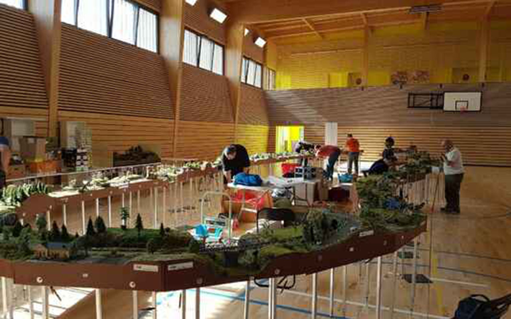
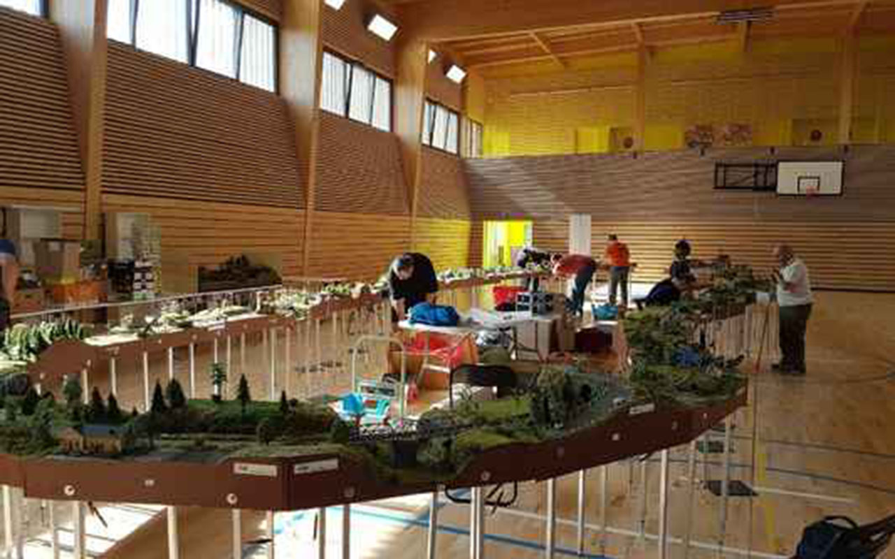
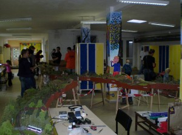
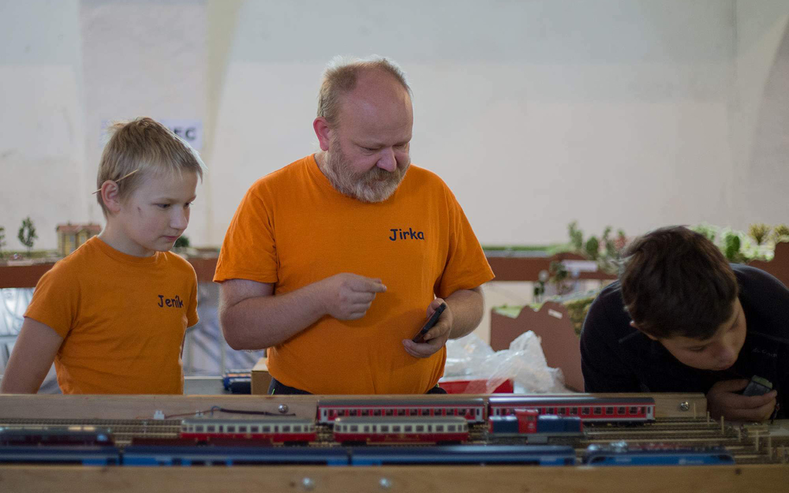
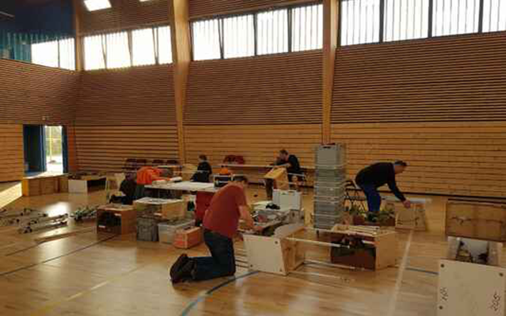

Modulové kolejiště H0: Kombinace přesnosti a kreativity ve světě modelování železnic
Modulové kolejiště H0 představuje fascinující svět modelování železničních tratí, kde se setkává precizní zpracování s nekonečnou kreativitou modelářů. Tento článek se zabývá tím, co modulové kolejiště H0 přináší do světa modelování železnic a proč je tak oblíbené mezi nadšenci tohoto koníčku.
Velikost a měřítko
Modulové kolejiště H0 se pohybuje v měřítku 1:87, což znamená, že každý centimetr na modelu odpovídá 87 centimetrům ve skutečnosti. Toto měřítko umožňuje detailní a věrné ztvárnění železničních vozidel a prostředí.

Koncept modulového formátu
Klíčovým prvkem modulového kolejiště H0 je jeho rozdělení do samostatných sekcí nebo modulů. Modulové kolejiště se skládá z jednotlivých dílů (tzv. modulů), na kterých je znázorněn určitý úsek tratě. Okraje modulů, na které jsou vyvedeny koleje, mají shodný tvar čel, tzv. styčný profil. Tento profil vytváří přesnou návaznost kolejnic a terénu na okraji, takže moduly lze snadno spojit dohromady. Spojením více modulů vznikne kolejiště, které napodobí skutečnou trať. Velikost a tvar modulů nejsou omezeny, námětem může být trať i stanice.
 

Standardizace modulů
Pro usnadnění spojování modulů různých modelářů existují standardizované rozměry a rozvody elektrického napájení. Styčné profily zajišťují přesnou návaznost kolejnic a terénu mezi moduly, což umožňuje snadné propojení a variabilitu sestav. Tři přechodové profily o šířce 500 mm, převzaté ze systému FREMO, jsou často používány pro zajištění kompatibility.
Flexibilita a rozšiřitelnost
Jedním z hlavních benefitů modulových kolejí H0 je možnost neustálého rozšiřování a upravování trati. Modeláři mohou začít s malým modulem a postupně přidávat další části dle svých představ a možností. Sestavené kolejiště může při každém setkání modelářů měnit svůj tvar a půdorys, protože moduly vybavené stejným styčným profilem lze vzájemně zaměňovat. To umožňuje neomezený růst a přizpůsobení trati podle vlastních potřeb.
  Detail a realismus
Díky možnosti zaměřit se na menší úseky tratě mohou modeláři věnovat větší pozornost detailům a realismu. Každý modul může obsahovat unikátní scenérie, budovy, terén a další prvky, čímž přispívá k celkové autentičnosti a působivosti železničního prostředí.
Výhody modulové koncepce
Modulová stavba kolejiště přináší v porovnání s klasickým stabilním kolejištěm určité výhody, které vyniknou zvláště dnes, kdy je nutné rozvažovat finanční a prostorové možnosti.
- Menší náročnost: Postavit první modul je mnohem snazší a rychlejší než celé kolejiště. Možnost pozorovat postavený modul zapojený do sestavy kolejiště je nejlepší motivací k další práci – pro žáky i dospělé.
- Variabilita obtížnosti: Při stavbě lze zvolit motiv vhodné obtížnosti (od jednoduchého traťového úseku až po stanici). Každý modelář vypracuje model do úrovně, kterou zvládne, aniž by ovlivňoval práci ostatních členů.
- Otevřená struktura: Provozu kolejiště se teoreticky mohou aktivně účastnit i modeláři-nečlenové, kteří vlastní modul(y) vybavené shodným styčným profilem.
- Skladnost modulů: V době, kdy není kolejiště provozováno, se moduly snáze uskladní a není zbytečně blokována místnost a na kolejiště se nepráší.
- Variabilita sestav: Sestavené kolejiště může pokaždé změnit tvar a proporce, což umožňuje neustálé inovace a přizpůsobení aktuálním potřebám a prostorovým možnostem.

Modulové kolejiště H0 je fascinujícím světem, který spojuje precizní modelování s neomezenou kreativitou. Díky modulovému formátu, standardizaci modulů a možnosti neustálého rozšiřování nabízí modelářům široké možnosti pro vytváření unikátních a působivých železničních prostředí, která oslovují jak začátečníky, tak i pokročilé nadšence.